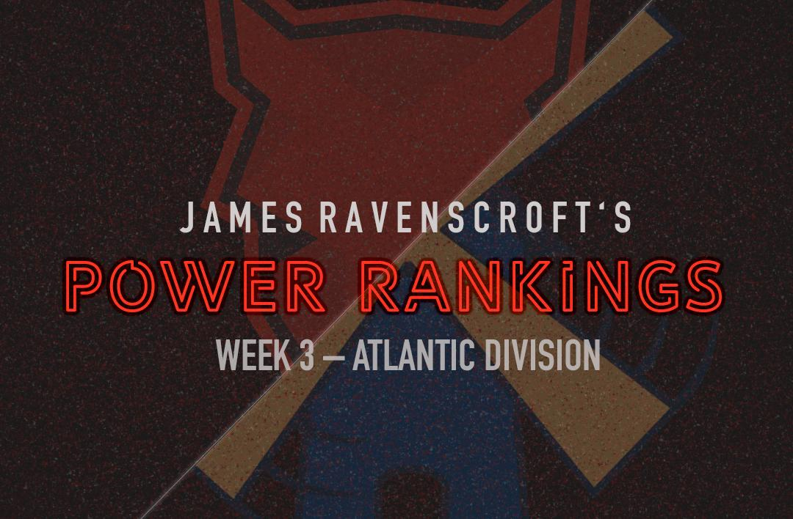
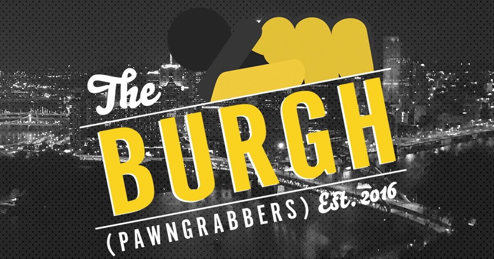

PRO Chess League Power Rankings
Week 3: Atlantic Division

Welcome to week three of the PRO Chess League power rankings. This week we had some great matches, but none better than the thriller between the Arch Bishops and the Chessbrahs. The two duked it out for 16 games, and in the end, the Chessbrahs stood victorious. On a more general scale, it seems that there is a clear split in this division between the good teams and the bad teams. There are three winless teams after three weeks, and every other team has at least two wins. It looks like we have 5 teams fighting for four playoff spots, and three teams fighting to not get relegated. But this week, we have the Battle Royale coming, which means that every team will have a chance to get back on track. The top scoring team in each section gets 24 points, so things could change very quickly. Notice the rare blunder by Caruana against Ivan Saric in what wound up being the difference between a loss and a tie for the Arch Bishops.
PRO Chess League Overview
This year, we will be doing a weekly power rankings list for teams in the Atlantic division. For those of you who don't know, the regular season of the PRO Chess League (PCL) is ten weeks long. Each week, teams will have to pick 4 players from their roster with an average standard rating (not blitz or rapid) of 2500 FIDE or less for each match. Every match consists of 16 games (aside from the Battle Royales) meaning every player plays 4 games, on rapid time control (15 minutes with a 2-second increment). At the end of the match, the winner of the match receives ten points for the win. Each will also earn as many points as points they earned in the match (i.e. If team A defeats team B 10.5-5.5, team A receives 20.5 points and team B receives 5.5 points). This means that every game matters, so even if a team has already lost, there is still reason to keep playing. If anything that I wrote was unclear, you can always see the
PRO Chess League Official Rules for further explanation. I'm looking forward to seeing the rest of the season, and hope you are too!

Want to support the Black and Gold? Be a part of the Pittsburgh Pawngrabbers' journey in 2019! Check out the Pittsburgh Pawngrabbers on Indiegogo to give your support!
Before we dive into these rankings, I just wanted to remind everyone of the standings after week 3.

1. Saint Louis Arch Bishops
(PR: 1) Points: 48.5
Tough loss for the Bishops, dropping them out of the top spot in these rankings. But what a match they had against Montreal. The two teams were going punch for punch with each other in a battle between what looks like the top two teams in the division. In the end, what really stands out to me is how Josh Bloomer didn't score any points, and for the year has 0.5 out of 8 right now. I know it makes sense to stack the top boards with Caruana and So, but few teams can afford consistently nonexistent scoring from their fourth board, especially against a team as good as Montreal. They could have won, though, if Caruana hadn't blundered an exchange against Saric in the final round. Nonetheless, it's hard to blame Caruana for the loss considering his 3 point performance. More than likely, it will fall on the shoulders of 3rd board Marandi, who only put up 0.5 points.
2. Montreal Chessbrahs
(PR: 2) Points: 60.5
What a match! Montreal's match this week was absolutely the match of the year so far, keeping fans on the edges of their seats until the very end. The Chessbrahs have absolutely proved that they're worthy of the top spot in these rankings after a statement win like that. They used a different strategy this week, going with 2 2600 players (instead of three) and using a 2400 and 2250 on boards 3 and 4, respectively. This was meant as a way to ensure 4 points against Arch Bishops 4th board, Josh Bloomer (rated 1886). This strategy worked beautifully, and thanks to another great all-around team performance, they knocked off the most dangerous team in the PRO Chess League. One other thing worth noting is the other-worldly play from Ivan Saric this year. In his twelve games this year, he has 11 points, with his only loss coming to Wesley So. He has been the MVP of the Atlantic Division this year by a mile, and his win over Caruana in round 4 to give the Chessbrahs the lead exemplifies his value to the division-leading Chessbrahs.
3. Webster Windmills
(PR: 3) Points: 44
With a win over the Lions, the Windmills put to rest rumors that the Windmills would take a step back this year. While there was a bit of a scare for a lot of the match, in the end, the Windmills secured a 3 point victory. Top board Ray Robson produced a perfect score, while 2nd board Durarbayli scored 3.5. That type of performance is going to get the job done every time. Even though they don't hold a playoff spot right now, they have played quality chess for the most part, and until I see them falter, I will keep the reigning division champs in a good spot in these rankings.
4. New York Marshalls
(PR: 4) Points: 56.5
At some point, the Marshalls are going to get respect for their great start. But I keep them at 4 due to a not very impressive win against a very weak Miami team. The team continues to get it done week in and week out, so it's hard to discredit them. But two of their opponents have yet to win a match this year, so the three wins that they have been a lot less impressive than they look. I suppose a team can only play the teams on their schedule, but more dominant performances would convince me of their excellence a lot more than these close victories. The Battle Royale is the real test of their mettle, and it feels like the first true test of the year for the Marshalls.
5. Montclair Sopranos
(PR: 5) Points: 45.5
It's hard to put a team with two straight wins and a playoff spot at 5th, but there seem to be 5 teams that are head-and-shoulders above the rest, and one of them has to be fifth. But don't be fooled, this Montclair team can compete with any team in this division. Their only loss was a close week one match against the undefeated Marshalls, so to this point, their resume looks good. This week, on the shoulders of Aleksandr Lenderman, who had a perfect score from board 3, they took care of a Pittsburgh team still searching for its first win. As I mentioned above, with the Battle Royale coming up this week, the Sopranos will get a chance to see how they compare, not only to their division but with the rest of the league.
6. Pittsburgh Pawngrabbers
(PR: 6) Points: 18.5
This season has been one depressing match after another for the Pawngrabbers. Many came in with high hopes for a Pittsburgh team that had made the playoffs and finished second in the Atlantic last year. But this year, things keep going downhill. They just can't seem to get going. They have signed three players since the start of the season, but the team is still searching for their first win. As a fan of the Pawngrabbers, I want to have faith that things will get better, and with the Battle Royale this week, that may happen. But given how awful the start to this season has been, there isn't a lot of room for optimism.
7. Miami Champions
(PR: 7) Points: 19
Miami had a close loss this week, but the last couple of points were won after the match had been decided, so this wasn't as close as it looks. A nice 3-1 final round looks great, but that was a performance they needed to start their day, not end it. If you're looking for a bright spot, notice that top board Eduardo Iturrizaga had himself a 3 point day. But at this point, the team needs a drastic change to turn things around. Things are looking grim for this team, and until they show me signs of improvement, I can't see them moving up these rankings any time soon.
8. London Lions
(PR: 8) Points: 19.5
There is a very clear division between the top five and the bottom three teams in this division. I moved the Lions up two spots despite the loss due to the fact that I saw a lot of fight early on by the Lions. They ended up petering out at the end, which is something to improve on, but at least they had a lead. Not getting any points out of 4th board Marcus Harvey hurt, especially since they don't have the firepower at the top to cover for his bad day. I know boards 4s usually don't have high expectations, but he is rated nearly 2400. A player like that needs to score at least something. It's been a rough start for the lions, but they have the Battle Royale this week, which is fully capable of turning a team's season around.